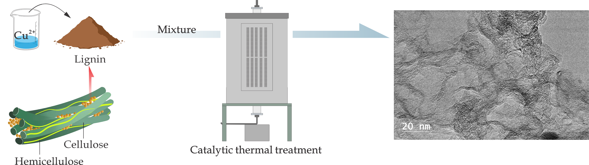

Lignin Valorization to Graphene-like Structure
Lignin-derived graphene | Catalytic graphitization | Copper catalyst
Overview
This project focuses on the continuing optimization of lignin-derived graphene-like structures using copper as a catalyst. Lignin is an abundant and renewable aromatic biopolymer, making it a promising carbon source for producing sustainable carbon nanomaterials.
The project investigates how synthesis conditions, including solvent type, Cu loading, and thermal treatment temperature, influence the formation of graphene-like carbon structures and copper-based catalytic particles. Through structural and morphological characterization, this work aims to better understand the role of Cu in promoting graphitization and improving the consistency of lignin-derived carbon materials. The outcomes of this project support the development of a cost-effective and biomass-based pathway for producing graphene-like materials with potential applications in cement-based composites, environmental materials, and other advanced functional systems.
Funding
- Mississippi State University – Office of Technology Management – (Project Title: Support for Further Development of Technology 2013.0889 – Synthesis Methods of Graphene from Lignin (SMGL))
Representative Images
